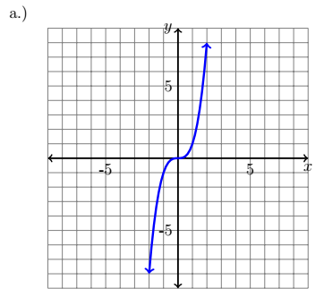
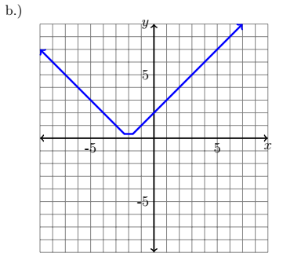
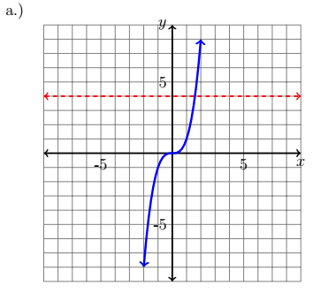
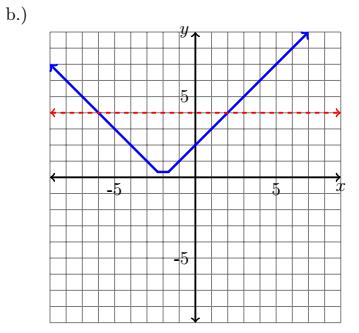

CH 1.5 – Inverse Functions & Relations
In mathematics it is essential to have a way to undo a function — it is one of the principles that make it possible to solve an equation. The ability to "undo" a function is known as the inverse. Typically speaking we denote the inverse of a function as \(f^{-1}(x)\).
The process to find the inverse of a function that is written in set notation is pretty simple: all you have to do is switch the \(x\) and \(y\) coordinates.
Allow \(f(x) = \{(2,4),(6,8),(3,3)\}\); that means that the inverse \(f^{-1}(x) = \{(4,2),(8,6),(3,3)\}\). Notice how the domain of \(f(x)\) becomes the range of \(f^{-1}(x)\), and the range of \(f(x)\) becomes the domain of \(f^{-1}(x)\).
Inverse Functions
Allow \(f\) and \(g\) to be two functions such that:
\(f(g(x)) = x\) and \(g(f(x)) = x\). Then, \(f(x)\) is the inverse of \(g(x)\) and \(g(x)\) is the inverse of \(f(x)\).
That means that \(f(f^{-1}(x)) = x\) and \(f^{-1}(f(x)) = x\), where the domain of \(f(x)\) is the range of \(f^{-1}(x)\) and vice versa.
Example
Verify that \(f(x) = x^2 + 2\) is the inverse of \(g(x) = \sqrt{x-2}\), and vice versa.
Solution
First we need to show that \(f(g(x)) = x\):
\[ \begin{aligned} f(\textcolor{red}{g(x)}) &= x \\ f\!\left(\textcolor{red}{\sqrt{x-2}}\right) &= x \\ \left(\textcolor{red}{\sqrt{x-2}}\right)^2 + 2 &= x \\ x - 2 + 2 &= x \\ x &= x \end{aligned} \]Next we need to show that \(g(f(x)) = x\):
\[ \begin{aligned} g(\textcolor{red}{f(x)}) &= x \\ g\!\left(\textcolor{red}{x^2+2}\right) &= x \\ \sqrt{\left(\textcolor{red}{x^2+2}\right)-2} &= x \\ \sqrt{x^2+2-2} &= x \\ \sqrt{x^2} &= x \\ x &= x \end{aligned} \]We can see that these two functions are inverses of each other, because both compositions are equal to \(x\).
Finding Inverses Algebraically
In order to find the inverse of a function algebraically, it is a bit more complicated than it is when you have the function in set notation.
Inverse Functions Algebraically
- Replace \(f(x)\) with \(y\).
- Solve the equation for \(x\).
- Interchange \(x\) and \(y\).
- Replace \(y\) with \(f^{-1}(x)\).
- Verify that they are inverses by checking \(f(f^{-1}(x)) = x\) and \(f^{-1}(f(x)) = x\).
Example
Find \(f^{-1}(x)\) when \(f(x) = \sqrt{x+3} - 2\).
Solution
Step 1: Replace \(f(x)\) with \(y\).
\[ y = \sqrt{x+3} - 2 \]Step 2: Solve the equation for \(x\).
\[ \begin{aligned} y &= \sqrt{x+3} - 2 \\ y + 2 &= \sqrt{x+3} \\ (y+2)^2 &= \left(\sqrt{x+3}\right)^2 \\ y^2 + 4y + 4 &= x + 3 \\ y^2 + 4y + 4 - 3 &= x \\ y^2 + 4y + 1 &= x \end{aligned} \]Step 3: Interchange \(x\) and \(y\).
\[ x^2 + 4x + 1 = y \]Step 4: Replace \(y\) with \(f^{-1}(x)\).
\[ x^2 + 4x + 1 = f^{-1}(x) \]Step 5: Verify.
One-to-One
Remember back to section 1 where we discussed the vertical line test, which told us if a graph was a function or not. In this section we have the horizontal line test. This test tells us if the inverse of the function \(f(x)\) is a function or a relation. Not all inverses are functions. This can be seen in the graph of the quadratic function.
Graphically the inverse of a function is the reflection of the function over the line \(y = x\). As we saw earlier this essentially means that all \(x\) and \(y\) values for each coordinate of the graph flip.

Notice that if you were to use the vertical line test on the reflection of the quadratic function, the inverse (blue) would not pass the vertical line test, and therefore would not be a function.
This occurs because the quadratic function is not one-to-one. To help determine if a function is one-to-one we use the horizontal line test graphically.
Horizontal Line Test
A function \(f\) has an inverse that is a function if a horizontal line can pass through the graph of the function and does not intersect the graph more than once.
One-to-One
A function \(f\) is one-to-one if none of the \(y\)-values repeat. More specifically, a function is one-to-one when each value of the dependent variable corresponds to exactly one value of the independent variable.
Applying the Horizontal Line Test
Example
Using the graphs below, determine if their inverse is a function or not.


Solution

The inverse to this function is a function. Notice how no matter where the horizontal line is placed, it never passes through the graph more than once.

The inverse to this function is not a function. Notice how the horizontal line passes through the graph more than once.
Exercises
Exercises to be added at a later date.